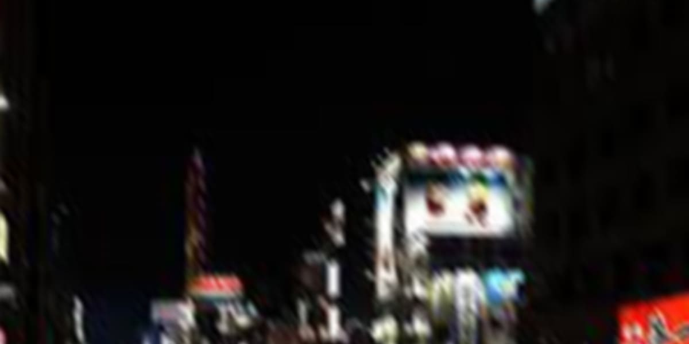

Angel in my stomach

2060/08/07
ネオンライトが毒々しく明滅する路地を、死に物狂いで駆けていた。片方の靴が脱げ落ちたことも、剥き出しの足裏がコンクリートに削られる痛みも、とうに忘れて。背後から伸びる、俺を屠ろうとする男たちの執拗な手から、ただ必死に逃れていた。
切り裂かれた腕から、抉られた脹脛から、どろりと重い液体が溢れ出す。だが、その飛沫はあまりにも黒かった。街の光を一切反射しないその色は、およそ人間の身体に流れていい代物ではない。
助けて。
痛い。
痛い、痛い、痛い……っ！
死にたくない！
迷い込んだ路地の行き止まり、つま先が何かに引っかかった。手を伸ばす間もなく無防備な体が冷たい地面に叩きつけられる。
追っ手たちの怒号が、湿った足音が、荒い息遣いが、すぐ背後まで迫っている。鼓膜を震わせるその音のすべてが、ここで俺の命が終わることを告げていた。
脹脛からどばりと黒い塊が溢れ出す。ああ……俺は失血死で死ぬのか。
急速に視界がどろりとした黒に侵食されていく。抗う術もなく、俺の意識は深い闇の底へと沈んでいった。
・・・
・・・
・・・
・・・
・・・
2060/08/08
次に目が覚めたのは見知らぬソファの上だった。
身体には重いコートがかけられ、後頭部には丁寧にクッションが差し込まれている。まるで壊れ物を扱うような手つきで運ばれたのだと、その感触が物語っていた。
「あ、起きた。おはよう。身体大丈夫？」
すぐ近くの椅子に腰掛けていた白髪の男に声をかけられる。白髪と言っても老化による色素細胞の機能低下ではなく、染めたような、あるいは元からその色だったかのような綺麗な白髪だった。つまり何が言いたいのかというと、この男は老人ではなく若い男だということだ。
俺は先ほどの大丈夫かという問いに何か言い返そうとしたが、喉が熱を持った砂漠のように乾ききっていて、声が掠れた音にすらならない。
男は俺の微かな喘ぎに気づいたのだろう。迷いのない手つきでペットボトルのキャップを開け、それを差し出す。
「飲みなよ」
受け取った水の冷たさが焼けるような食道を通り胃に落ちる。一口、また一口と飲み下すたびに、少しずつ人心地がついていった。
「大丈夫そうだね」
男は心底安堵したのか、小さく息を吐いて肩の力を抜いた。だが、その安堵が俺の警戒を解くことはない。
「あんた、誰だよ。ここはどこだ」
潤った喉から棘のある言葉を絞り出す。俺を殺そうとした連中の仲間か、それとも。男を見つめる瞳には一切の隙を見せない、剥き出しの警戒心が宿っていた。
「俺は桑原唱。ここは……そうだね、俺を匿ってくれてる人の仕事場兼自宅ってところかな？」
「匿う」という不穏な単語が、さらりと男の口から漏れた。桑原と名乗ったこの男は何らかの罪を犯した逃亡者なのだろうか。何にせよ、まともなカタギの人間ではないことは確かだ。だが下手に正義感を振りかざす善人よりは、毒を喰らわば皿までの悪党の方が今の俺には幾分か気が楽だった。
「助けてもらった恩は忘れない。……いつか、必ず返す」
掠れた声でそれだけを告げ、俺はソファから身体を引き剥がした。一刻も早くこの奇妙な優しさから離れなければならない。十九年生きてきて学んだのは、タダで受ける親切ほど高くつくものはないということだ。そしてその裏にはいつだって誰かの悪徳が、牙を剥いて獲物を待ちわびている。
「あーちょっと！ まだ動かない方がいいよ」
桑原の制止を無視し俺は扉の方へと一歩踏み出した。その瞬間、不意に視界がぐらりと歪んだ。いつの間にか丁寧に巻かれていた包帯の下、あの黒い血を吐き出していた傷口が内側から焼けつくような激痛を訴え始める。全身の筋が強張るような痛みに、膝の力が一気に抜けた。
「おっと、危ない」
地面に激突する寸前、桑原の腕が俺の身体を支えた。視界の隅で困ったような、それでいて全てを見透かしたような苦笑いを浮かべていた。
「君の身体中にあった切り傷、何で切られたのかは知らないけど、多分毒みたいなのが刃物に塗られてたんだと思うよ」
腕に支えられたまま、俺は抗う力もなくゆっくりと地面に膝をついた。フローリングの冷たさが膝頭から伝わってくる。
「素人なりに手当してあるから、とりあえずは大丈夫。それに……」
桑原の声のトーンがそこで一段階低くなった。湿り気を帯びたその響きが俺の耳を刺す。
「君、天使の核を食べたんでしょ」
ドクンと心臓が一度だけ、これまでにないほど大きく脈打った。直後、暴力的なまでの動悸が始まる。
──なんで、知ってる。
手当をされた時にバレたのか。いや、バレた理由なんて今はどうでもいい。こいつが俺を助けた理由は。こいつが俺に近づいた目的は。
最悪の想像が脳内を支配し、俺は残された力を振り絞って桑原の身体を突き飛ばした。
「いてっ。ちょっと、さっきも言ったけど、あんまり動かない方が……」
「うるさいっ！ お前も、どうせ俺を殺すのが目的なんだろ！」
パニックだった。思考の全てが「死にたくない」という一語に塗り潰され、周囲の景色が白く霞む。その激情に呼応するように包帯の奥で傷口が裂け、どろりとした黒い血液が染み出した。
「い゛……っ、あああぁっ！」
包帯を黒く汚していく毒液のような血液。それが神経を直接炙られるような激痛となって俺を襲う。なんで俺ばっかり。どうして俺が、こんな目に。
「落ち着いて。深呼吸して」
桑原が突き飛ばされた体勢からゆっくりと立ち上がり、両手を挙げて敵意はないと示すように歩み寄ってきた。その瞳は俺の醜いパニック状態を拒絶するでもなく、ただ静かな水面のように凪いでいる。
「君を殺すつもりなら、雨の路地裏でそのままにしておいたよ。わざわざ手当てをして、水を飲ませたりしない」
桑原は俺の視線と同じ高さまで腰を落とすと、そっと熱を帯びた俺の肩に手を置いた。
「君の身体の中で今、天使の血液が毒に対して拒絶反応を起こしてるんだ。暴れれば暴れるほど、その黒い血は君を蝕むよ。……だから、まずは息を吐いて。俺を見て」
桑原の穏やかすぎる声が嵐のような俺の脳内に、不思議と一筋の道を作るように響いた。
やがて荒れ狂っていた心臓の鼓動が緩やかに凪いでいき、肺を焼くようだった呼吸も定まってくる。包帯の下の痛みは依然として居座っているが、のた打ち回るような激痛からは解放されていた。
桑原から再び差し出されたペットボトルを、俺は今度は大人しく受け取った。冷たい水がささくれ立った神経を鎮めていく。
「君の名前を教えてくれる？ 人に名前を聞いておいて自分だけ名乗らないっていうのは、ちょっと卑怯だと思うんだよね」
桑原は椅子に深く腰掛け、試すような、けれど温かい眼差しを向けてきた。
「……虎穴我楽」
絞り出したその名を聞いた瞬間、桑原はふっと鼻で笑った。
「なんだよ、可笑しいのか？」
「いや、ごめん。ただ覚えやすくていい名前だと思ってさ。助かるよ」
桑原は機嫌よさそうに目を細めた。その余裕のある態度がこちらの緊張を削いでいく。
「じゃあ我楽。君の身に起きたことについて、いくつか聞きたいことがあるんだけど……いいかな？」
「ああ、好きにしろよ。…もう、散々みっともない姿を見られた後だしな」
我楽は決まりが悪そうに桑原から顔を逸らし、ソファの端を指先でなぞった。意地もプライドも、雨の路地裏とこの部屋でのパニックでもうボロボロになっていた。観念したように小さく吐いた溜息が、静かな部屋に溶けていく。
桑原はふっと微笑んだ。
「では早速質問。我楽、君は自分の身体のことをどの程度理解してる？」
「……あんまり。ただ傷口から時々、気味の悪い黒い血が出るってことくらいしか」
「なるほどね……。じゃあ、何故そんな血が出るようになったのか…心当たりあるよね？」
予想していた問いに、我楽は無意識に拳を握りしめた。掌に爪が食い込む。
「身体がおかしくなったのは、金属の塊みたいなのを無理やり飲まされてからだ」
桑原は我楽の足に巻かれた黒く滲んだ包帯へと視線を移し、静かに口を開いた。
「君が飲んだのは “天使の核” だよ。知ってるだろ？ ここ数年でこの言葉は一気に広まって、今じゃ子供の口からも聞けるくらい有名になった。……救いか、あるいは呪いの象徴としてね」
天使の核。それは「不死身の肉体を手に入れられる」という、真偽不明の噂が付きまとう代物だ。その噂を信じる者たちの間では高値で取引され、反社会勢力の巨大な資金源となっている。同時に、核を剥ぎ取るために民間人が無許可で天使を狩る “密猟” が深刻な社会問題となり、現在のネオンシティではその所持も取引も厳しく処罰されるようになっていた。
「じゃ、じゃあ……俺の身体は不死身になってるってことか？ はっ、嘘だろ……？」
我楽の震える声に、桑原はどこか物悲しげな笑みを浮かべて首を振った。
「残念ながら不死身になんてなれないよ、安心して。あれはただの質の悪いデマ。……まあでも、君の状態は程度にもよるけど不死に近いと言えば近いかな」
何を言ってるんだ、この男は。
我楽は混乱した。死なないわけではないが、不死に近い。矛盾した言葉を吐く桑原の瞳の奥には、光も届かないような底知れない暗闇が揺らめいていた。
「どういうことだよ。はっきり言ってくれ」
我楽の苛立ち混じりの問いに桑原は眉を少しだけ下げ、諭すようなトーンで言葉を継いだ。
「我楽が取り込んだのは、おそらく “完全体” か……それに極めて近い品質の天使の核だと思うんだよね。知っての通り、天使は核を破壊されて初めて死に至る。その核が壊れていない──つまり “生きた” 状態で体内に取り込むとどうなるか。……少し悪趣味な言い方をすれば、寄生虫みたいに、自分の体の中で天使を飼うことになるんだ」
桑原の最悪な例えに、我楽は胃の底から込み上げる不快感に露骨に顔を歪ませた。自分の内側に、あの異形が息を潜めている。その想像だけで吐き気がした。
「天使はまだ生きているからね。まずは新しい体に馴染もうと、あの黒い血を少しずつ構築し始めるんだ。血液を作り変えて、作り変えて……そうして全身に行き渡った頃には、体のどこかが損傷しても、人間本来の治癒力とは比較にならない速度で欠損箇所を模倣して修復する。……まあ、はたから見れば実質不死身だよね、ってこと。分かった？ これが今の君の正体だよ」
到底理解が追いつく話ではなかった。だがあの時路地裏で脹脛から溢れ出した、およそ人間のものではない黒い液体の正体を知り、得体の知れない恐怖が少しだけ知識という名の安心に変わる。
「……じゃあそれって、別に害はないんだよな？ 怪我をしてもすぐ治るんだろ？ むしろ得してるってことじゃないのか」
縋るような我楽の言葉に、桑原は一瞬だけ視線を泳がせた。
「んー……。まあ、短期的にはそうだね」
どこか含みのある突き放すような言い方。だがそれ以上の説明を求める隙を桑原は与えなかった。
「質問に戻ってもいいかな？ 我楽は、一体誰に傷つけられたの？」
桑原の穏やかな、けれど核心を穿つような問いに、我楽は忌々しげに顔をしかめた。
「……そんなの、こっちが知りたい。普通に街を歩いてただけなのに、いきなり知らねぇ野郎共に囲まれてさ。挙げ句に『ネズミ男』なんて意味不明なあだ名で呼ばれて、危うく殺されかけた」
ネズミ男。
その単語が漏れた瞬間、桑原の眉がわずかに跳ねた。空気が一瞬だけ凍りついたような、奇妙な静寂。
「……あんた、今の名前に心当たりがあるのか？」
「いや……別に。ただ最近の若い子のネーミングセンスは独特だなって感心しただけだよ。気にしないで」
桑原はすぐにいつもの食えない大人の微笑みに戻り、ひらひらと手を振って話を流した。だがその誤魔化しがえらく不自然であることは、我楽の目から見ても明らかだった。
・・・
・・・
・・・
・・・
・・・
・・・
2060/08/11
あれから数日。驚異的な回復力を見せた我楽の身体は、表面上の傷こそ塞がっていたが、内側に巣食う黒い血の疼きはまだ完全には御せていなかった。桑原は「いつでも戻ってきていいよ」と、どこか寂しげな微笑を浮かべ、電話番号の記された薄汚れた紙切れを渡して手を振った。
我楽は再びネオンの雑踏へと放り出される。ポケットを探れば、くしゃくしゃになった千苑紙幣が一枚と、頼りない数枚の小銭だけが指先に触れた。とりあえず飯は食える。
空腹に促されるまま、排気ガスと油の匂いが混ざり合う屋台街へと足を向けた。ひときわ湯気を上げている店で一番安い肉まんを一つ買い、熱さをこらえて齧り付く。
「ニーチャ、いい食いっぷりだなぁ」
不意に、隣で安物の酒を煽っていた中年の男が濁った瞳で話しかけてきた。薄汚れたジャンパーを着た、街のどこにでもいる浮浪者崩れの男だ。
「……なんか用かよ」
「いやいや、殺気立つなよ。ただ最近の若いのはみんなネズミ男の噂でもちきりで、ピリピリしててかなわねぇと思ってさ」
その単語に、肉まんを咀嚼する我楽の顎が止まった。
「今、なんて言った。ネズミ男？」
「ああ？ 知らねぇのかよ。今、この界隈の裏掲示板じゃあ一番のトピックだぜ」
男は面白そうに鼻を鳴らし、酒の勢いでべらべらと喋り始めた。
「なんでも、そいつを仕留めりゃ一千万苑の賞金が出るらしい。そんな話を聞いた連中はみんな、血眼になってネズミ男の首を狙ってる。噂じゃあそいつの血は天使みたいに真っ黒で、ネズミみたいにすばしっこく夜の路地を逃げ回るんだとさ」
我楽の心臓が、またあの不快な動悸を刻み始める。
「他にも、首をはねても死なないバケモノだとか、実は天使と人間のハーフだとか、まあ尾ひれがつきまくってるがな。とにかく、そいつを捕まえりゃ一生遊んで暮らせるってんで、ここらの空気は常にピリついてんのさ。……ニーチャも、夜道には気をつけなよ。運悪く “ネズミ” に間違われたら、命がいくつあっても足りねぇからな」
男は下品な笑い声を上げてまた酒を煽った。
──あいつの血は天使みたいに真っ黒。
──運悪く “ネズミ” に間違われたら。
耳にこびりつく言葉が俺の思考を黒く塗りつぶしていく。あの日俺が路地裏を這いずり回り、切り刻まれ、死の淵まで追い詰められたのは全部、ただの “勘違い” だったっていうのか？ ネズミ男と言う、会ったこともない誰かの首にかかった賞金。そのたった一千万苑の欲のために、俺の命は天秤にかけられたのか。
腹の奥で、どろりとした暗い感情が脈を打ち溢れ出す。
冗談じゃない。勘違いで俺を殺そうとしたのか。
「なあ。そのネズミ男ってのはどこにいるんだ。見た目は、身長は。どのへんを根城にしてる」
「そんなの知ってりゃ、今頃こんな掃き溜めで酒なんて飲んでねえよ。見た目も特徴も、俺は知らんね。……なんだニーチャ、お前もその賞金が欲しくなっちまったのか？」
男がニヤついた視線を投げかけてくる。
「……いいや」
我楽は砂を噛むような味のしなくなった肉まんの最後の一口を、無理やり喉の奥へ押し込んだ。
「賞金になんてこれっぽっちも興味ねえよ。俺はただ、そのネズミ男って野郎を一発ぶん殴ってやりたいだけだ。じゃあな」
それだけ吐き捨て、我楽は屋台の灯りから背を向けた。男の揶揄うような笑い声を背中に浴びながら、ポッケに突っ込んだ拳を固く握りしめる。大人から見ればただのガキの虚勢にしか見えないかもしれない。だが今の我楽にとっては、その怒りだけが自分を繋ぎ止める唯一の、そしてあまりに脆い支えだった。
・・・
・・・
・・・
・・・
・・・
2060/08/13
「おっ、ニーチャ。また会ったな」
この二日間知らない土地で知らない人間に揉まれ、ネズミ男の影を追って奔走したが結果は散々だった。知らねえよと追い払われ、執拗に追いかけられ、掴まされたのは金目当てのガセ情報ばかり。気がつけば、病み上がりの体力もなけなしのやる気も底をつき、俺はまたあの肉まんの屋台へと戻ってきていた。
「どうだ、ネズミ男は見つかったか？」
浮浪者然とした男は他に居場所がないのか、二日前と同じ薄汚れた格好で同じ場所で酒を飲んでいた。
我楽はポケットに残った最後の小銭で一番安い肉まんを買い、火傷をしないように注意しながら、暴力的な熱さの塊に齧り付く。
「ははっ！ その面、収穫なしって感じだな。殴れなくて可哀想に」
ニヤニヤとしつこく話しかけてくる男を、我楽は恨みがましく睨みつける。
「あんた暇なんだろ。そんなに喋る元気があるなら働けよ」
「ニーチャだって、ネズミ男なんて幻を追う暇があるなら働くなり学校へ行くなりしろよ、ガキ」
屋台の店主は無職同士の不毛な口喧嘩をBGMに、無愛想に蒸し器の蓋を閉めた。白い湯気が冷え始めた夜の空気に溶けていく。
「ニーチャ。お前、名前なんて言うんだ？」
「……なんで見ず知らずのあんたに教える必要があるんだよ」
「見ず知らずなんて冷たいこと言うなよ。会うのは二回目だろ？ ……実はな、俺もネズミ男をずーっと前から探してるんだよ」
肉まんを咀嚼する口が止まりそうになるのを必死にこらえた。興味がないフリを装いながら、俺はわざと大きく肉まんを頬張る。
「……名前を教えたら、協力してやってもいいぜ？」
「名前だけで？ 怪しすぎる」
「警戒心が強いのはいいことだが、こすいな。……じゃあ、もし俺がネズミ男に詳しい奴を紹介してやるって言ったら、名前を教えて俺を仲間に入れてくれるか？」
男の濁った瞳が一瞬だけ鋭く細められたような気がした。我楽は最後の一口を飲み込み、胸ポケットに忍ばせた桑原の電話番号が書かれた紙を指先で上からなぞる。一人で空回りし続けるよりはマシかもしれない。
「……虎穴我楽だ」
「コケツ、ガラン。……ふん、食えねえ名前だな」
男は満足げに鼻を鳴らし、ようやく重い腰を上げた。
「俺はカンザシ。よろしくな、相棒。……さあ、冷えないうちに移動しようぜ。その “詳しい奴” ってのは、光が届かねえような深い場所にいるからよ」
俺は返事をする代わりに空になった包み紙を丸めてゴミ箱へ投げ捨てた。
・・・
・・・
・・・
しばらく後をついて行き、カンザシは一本道を歩く途中で不意に足を止めた。口角をやや吊り上げ、どこか楽しげにこちらを振り向く。
「ここだ」
カンザシはトントンと地面を足裏で叩いた。視線を落とすと、そこには使い古されたマンホールが一つ埋まっているのみ。
「……まさか」
「あぁ。この下だ」
我楽は「最悪だ」という感情を隠さず、露骨に顔を歪めた。だがカンザシはそんな反応を意に介した様子もなく、手慣れた手つきで重い鉄蓋を外すと迷いなく暗がりの下へと消えていく。
「我楽も早く降りてこいよ。……ああ、ちゃんと蓋は閉めろよな」
ぽっかりと口を開けたマンホールを覗き込む。下にはこちらを見上げるカンザシの瞳と、コンクリートに覆われた湿り気のある未知の空間が広がっていた。我楽は一度、深く息を吐く。気色の悪い生物がいないことと、吐き気を催す腐敗臭がしないことを祈りながら、ネオンの光が届かない地面の下へと消えていった。
「遅いな。お前、地下は初めてか？」
「逆に、なんであんたはここが初めてじゃないんだよ……」
壁面には天使対策として申し訳程度のLEDライトが設置されており、想像していたよりは明るい。臭いも、鼻が慣れてしまえば耐えられないほどではなかった。
「地下にはサツ鉄が滅多に入ってこねぇからな。上では息も満足に吸えないような、本当の意味で追い詰められた化け物どもが住んでんだよ」
カンザシは背中で語りながら淀みなく進んでいく。
「そして、そういう奴らの持ってる情報ってのは馬鹿にできねぇ。俺たち浮浪者ってのはスマートフォンを持つ権利さえ剥奪されてるからな。人伝いの情報の鮮度が、何よりも命綱なんだよ」
無機質な景色が続く通路を何度か右へ曲がる。その時、曲がり角の先から揺らめく赤い光が差し込んできた。火だ。
湿った冷気の奥から、微かに焦げ付いたような匂いが鼻腔をくすぐった。
近づくと、薄汚い中年の男が二人、焚き火を囲むようにして座っていた。近くにはブルーシートの簡易テントが三つ。彼らはこの地下空間の一角で泥を啜るように生きているのだろう。
「久しぶりだな、お二人さん。マタタビは中か？」
カンザシの問いに一人は火にかけた缶詰を睨んだまま黙殺した。もう片方は無造作に伸びた髪の隙間から、濁った瞳を我楽へ向ける。
「……そっちのガキは何だ」
「可愛いだろ？ さっき上で拾った、俺の新しい相棒だよ」
男はつまらなそうに鼻を鳴らし、興味を失ったように視線を炎に戻した。
カンザシは迷わず一番左のテントに近づき、入り口のシートを捲り上げる。我楽はその隙間から内部を盗み見た。
そこには先ほどの二人よりさらに老け、白髪の混じった男がいた。彼は暗がりの中で、何やら精密な作業に没頭している。
「マタタビの爺さん。ネズミ男の情報をくれないかね？」
カンザシは単刀直入に切り出した。
「このガキが、ネズミ男に復讐したいんだってさ」
「……復讐、か」
マタタビは手を止め、低く呟く。
「情報を売って、俺に何のメリットがある」
「そうだな……賞金を半分やる。それでどうだ？」
冗談だろ。我楽は心中で毒づいた。目的は復讐だが、もし奴を殺して賞金が出たとして、それを「情報を売っただけの他人」に半分も渡すのは生理的に受け付けない。
「半分。……後払いというわけか」
「俺のことが信用できないなら、契約でもするか？」
カンザシが試すように口角を上げ、小指を男へと突き出した。その挑発に、マタタビは初めてこちらを真っ向から見据えた。
「お前、俺に指がないのを知っていて言っているのか？ それとも、幻肢でも見えているのか？」
マタタビの手には小指がなかった。右手に関しては薬指さえ欠けている。一体何者なんだ、この爺さんは。
「……珍しいか？」
じっと手を見つめていた我楽は、その問いが自分に向けられたものだと気づくのに一瞬遅れた。
「お前の指はいいな。ちゃんと十本ある」
その冷たい言葉に心臓が跳ねる。
「情報が欲しいのはお前だな？ ならば、契約の相手はこいつじゃなく、お前だ」
マタタビは左手の薬指を突き出してきた。
「初めてか？ 怯えるな。守りさえすれば、指は飛ばない」
拒否権などなかった。我楽は訳もわからぬまま、震える左手の小指を差し出す。マタタビの硬い指が、我楽の小指を捕らえ絡み合う。
「契約だ。ネズミ男を仕留めた暁には、賞金の半額を俺の元へ届けに来い。……分かったな」
「……はい」
一瞬だった。指が離され、マタタビは再び背を向ける。
「情報だったな。……では、ネズミ男の容姿を教えてやろう」
容姿。我楽は無意識に身を乗り出す。
「ネズミ男は人間の男だ。歳は三十代半ば。重厚なコートを着込み、マフラーを巻いている。巷には他にも色々なデマが流れているが、確かな容姿はこの四点だ。……十分か？」
人間の男。三十代。重いコートに、マフラー。
待て。あれ？
「すげえな爺さん。そんな鮮度のいい情報どこから仕入れてくるんだよ」
「お前とは今話していない。割り込むな」
我楽の脳内に桑原の姿がフラッシュバックする。
あいつは人間だ。髪は白かったが、顔立ちは若かった。俺が目覚めた時、俺にかけられていたあのコートは確かに重みがあった。
落ち着け。そんな特徴の奴なんてこの街にはごまんといる。だが桑原は天使の核に詳しすぎた。なぜだ？
桑原は「ネズミ男」という単語に、明らかに動揺して見せた。なぜだ？
そういえばあの部屋のソファに、マフラーがかかっていなかったか？
「おい、何考え込んでんだよ。……だめだ、こいつ聞いてねえ。ありがとよ爺さん。次は酒と一緒に会いに来てやるから、死ぬんじゃねえぞ」
カンザシが呆れたように我楽の腕を引き、来た道を戻り始める。地上へ戻るハシゴを登り、マンホールの蓋を閉めた。
再びネオンの街に立った時、我楽の頭はもう、一つの疑惑でパンクしそうだった。
「お前、まだ根に持ってんのか？ 賞金半分くらい、命に比べりゃ……」
「悪い。俺、帰るわ」
我楽はカンザシを置き去りにして、迷いのない足取りで歩き出した。
「おいっ！ 帰るってどこにだよ、家なんかねぇだろお前！」
背後で叫ぶカンザシの声はもう届かない。我楽の直感が確信へと変わっていく。俺を助けたあの男は、俺の人生を壊した原因そのものなのかもしれないと。
・・・
・・・
・・・
2060/08/14
午後零時を過ぎた頃、静寂を切り裂くようにインターフォンが鳴った。新たな依頼人だろうか。そう思いながらドアスコープを覗くと、そこには数日前、不器用にここを去っていったはずの我楽が立っていた。
鍵を回し、重い扉を開ける。
「久しぶりだね、我楽。こんな時間に一体どうしたのさ」
「話したいことがあるんだ。入れてくれよ」
我楽は穏やかな微笑を浮かべていた。だがその瞳だけは敵意を隠しきれず、濁った泥のように暗く沈んでいる。
「いいよ」と軽い返事をし、桑原は彼を招き入れた。仕事場を兼ねたリビングの椅子。二人は冷たいテーブルを挟んで対面した。
「で、話って？」
少しの間、彼は言葉を慎重に選ぶように逡巡し、やがて低い声で口を開いた。
「ネズミ男を探してた。この二日間、ずっと」
「おっと、それはまた。精が出るね」
「人に聞いて、地下の汚いドブネズミどもの巣にまで潜った。……けど、得られた情報は少なかったよ」
「大変だったね。怪我はしてない？」
我楽は俯いたまま、感情を削ぎ落とした声で淡々と続ける。
「汚ぇ浮浪者の爺さんから聞いたんだ。ネズミ男の、容姿の情報を。……ネズミ男は三十代の人間の男で、重厚なコートを着込み、マフラーを身に纏っているらしい」
随分と当たり判定の大きい情報だなと、桑原は思った。
「俺の視野が狭いことは分かってる。でもな、あんたはその容姿に全部当てはまってるんだよ。おまけに天使の核にも詳しすぎる。それと……あんた、俺がネズミ男の名を出した時、妙な反応をしただろ。……なあ、何か言ったらどうなんだ」
我楽の視線が桑原を刺した。
なるほど。こいつは俺を「ネズミ男」だと確信している。……あるいは、そう思い込みたいのか。
立ち上がったのは同時だった。桑原は椅子を後ろに押し退け反射的に距離を取る。対する我楽はテーブルを乗り出すような勢いで懐の包丁を抜き放ち、迷いなく桑原の頸動脈を狙って突き出した。
一歩下がるのが遅れていれば、間違いなくその刃は桑原の喉を貫いていただろう。まったく殺意の高い野良鼠だ。
テーブルを跳ね除け我楽が包丁を振り回す。生憎桑原に優れた反射神経や運動神経は備わっていない。素早い連撃を避けきれず、鋭い刃が腹部を深々と切り裂いた。
着ていた白いロングTシャツが一瞬で濡れる。どくどくと溢れ出すその液体を見た瞬間、我楽の瞳が、狂喜に満ちて大きく見開かれた。
「やっぱり、あんたがネズミ男だったんだ……！ あははっ。なんだよ、その血の色！ 俺と一緒じゃねえか！！」
桑原の腹部から溢れ出し、綺麗な床を汚したのはどろりとした漆黒だった。
我楽の包丁を振り回す手は止まらない。このままでは殺されると判断した桑原は、自身の長く伸びた脚で我楽の腹部を蹴り飛ばした。不意を突かれた我楽はバランスを崩して大きくよろめき、床へと倒れ込む。しかしその手は決して包丁を離すことはしなかった。
桑原はその隙に玄関に向かって必死に進んだ。床に広がる漆黒の血液、腹部から溢れ出す熱い不快感と痛みに耐えきれず、彼は膝をついた。
冷や汗が目に入り、視界を遮る。
「……クソっ」
簡単には死なない。それは天使の核の力によって理解している。だが、だからといって痛みが消えるわけでも、殺されるかもしれないという恐怖が消え去るわけでもない。
痛みに喘ぐ桑原の背後に、いつの間にか我楽が立っていた。影が桑原の全身を覆う。
「ネズミ男って、こんなに弱いのか？ よく今まで生きてこられたな、おい。ガッカリさせんなよ」
我楽の声には冷徹な失望と、獲物を追い詰めた愉悦が混ざり合っていた。彼は包丁を両手で握り直し、桑原の背中、その心臓が位置する場所へ向かって全力で振り下ろそうとした。その瞬間。
パンッと乾いた発砲音が部屋に響き渡った。どこからともなく放たれた弾丸は、桑原へ振り下ろされるはずだった我楽の胴体を正確に撃ち抜いた。
何が起きたのか理解できず、我楽はよろけてその場に尻餅をつく。包丁は握りしめたままだが、指先から力が急速に失われていく。
誰だ。誰が撃った。桑原は目の前で這いつくばり血を流している。ならこいつじゃない。じゃあ、誰だ。
霞む視界で見上げると、いつの間にか開いていた玄関の前に一人の男が立っていた。その男はマフラーを巻き、重厚なコートを身に纏っている。
「……ネズミ、男……？」
我楽は喘ぐように漏らした。男は拳銃を構えたまま、落ち着いた足取りで我楽へと近づいてくる。
「唱が言ってた、天使の核を飲んだガキってのはお前か。面倒臭いことをしてくれたな」
撃ち抜かれた胸元からどくどくと黒い血が溢れ出す。体内の異物が、主の危機を察知して内側から内臓を掻き毟るように蠢く。その激痛に視界が白く染まった。
男は負傷した桑原には目もくれず、我楽の前に静かにしゃがみ込んだ。そして冷たい銃口を青年の額に突きつける。
「お前は殺す相手を間違えた。こいつは確かに天使の核を喰らった成れの果てだが、ネズミ男じゃない」
死にたくない。心臓の奥で天使が、そして我楽自身の魂が悲鳴を上げる。
「俺は既に何人も殺してる。今更、ガキ一人殺すのに抵抗なんてないんだよ」
引き金にかけられた指に、グッと力がこもる。
「ま、待て……！ まだ死にたくな──」
二度目の発砲音。至近距離で放たれた衝撃が、我楽の意識を真っ暗な闇へと突き落とした。
我楽の身体は力なく後ろへと倒れ、今度こそ、その手から包丁が滑り落ちた。砕けた額から黒い血に混じって、鮮烈な赤が床に滴り落ちていく。
狭い廊下には、生臭い鉄の匂いと硝煙の匂いが満ち満ちていた。
・・・
・・・
・・・
・・・
・・・
2060/08/16
桑原はソファに、まるで魂を抜かれた抜け殻のように横たわっていた。鎖骨のあたりから伸びた細い管が、相変わらず彼を点滴の袋と繋ぎ止めている。
玄関の扉が開き、巷で「ネズミ男」と呼ばれる男──鼡が戻ってきた。彼は濡れたマフラーを乱暴に剥ぎ取り、雨を吸って一段と重くなったコートを床に放り出した。
「いつ起きた。身体の具合は」
「……四十分前、くらいかな。それより、あの子の死体はどうしたの」
桑原の視線は虚空を彷徨ったまま動かない。
「ヤミに捨てた。……いずれ記憶からも消える。罪悪感は捨てろ」
「そんなこと言われてもさ……」
天使の核による驚異的な治癒力も心の傷までは塞いでくれない。桑原は目の前で少年を死なせてしまったという泥のような後悔に、今も沈んでいた。鼡とて無機質なマシーンではない。まだ十九歳だったはずの命を直接的に屠った感触は、今も指先に冷たく残っている。これで二回目だ。
「考えるんだよ。僕がもっとちゃんとあの子を見てあげていたら、死なさずに済んだんじゃないかって。……あークソッ。もう、あの子の名前が思い出せない」
桑原の声が震え、掠れていく。
「そのまま忘れろ。いつまでも引きずっていれば、先に壊れるのはこっちだ」
鼡は窓の外、絶え間なく降り続く雨を見つめた。ネオンの光が雨粒に反射し、路地裏を毒々しい色に染めている。
虎穴我楽が必死にこの理不尽な街を、復讐という名の希望を抱いて生きていたこと。それを知る者はもうこの街には誰もいない。ただ冷たい雨の音だけが、忘れ去られた少年の最期を弔うように、いつまでも窓を叩き続けていた。